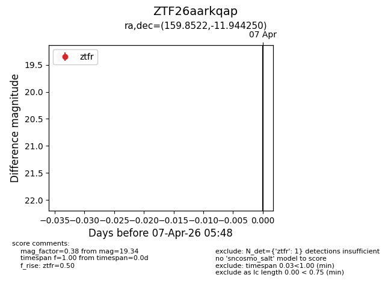
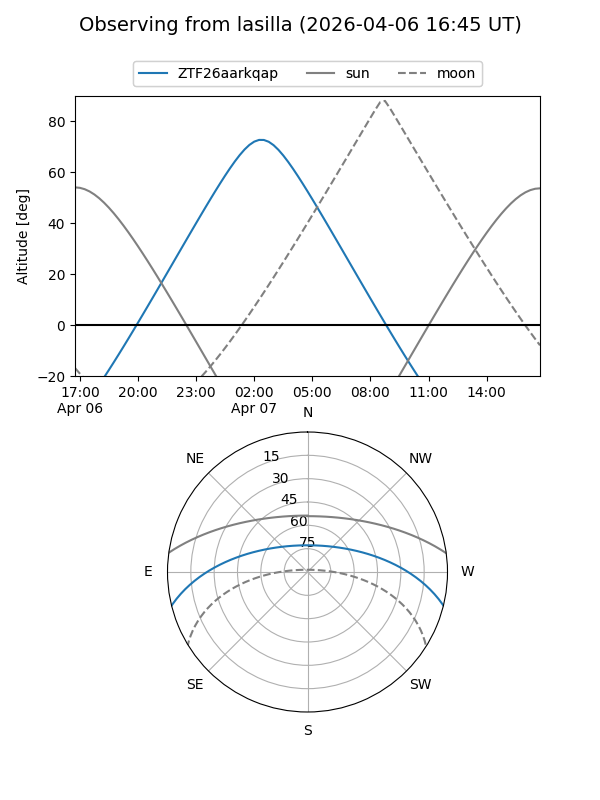
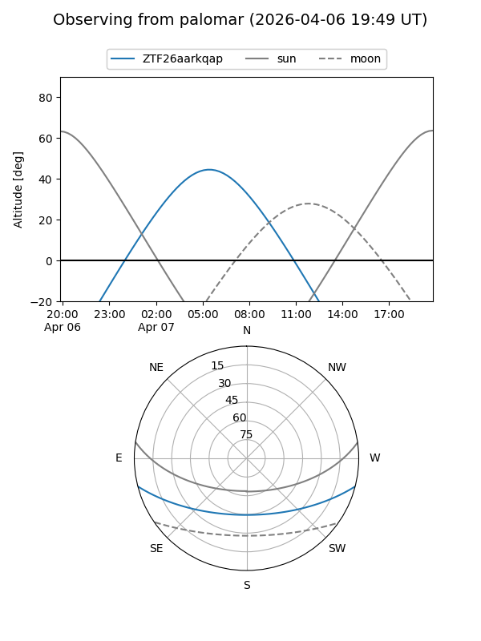

ZTF26aarkqap
Target ZTF26aarkqap at 2026-04-07 05:51
Aliases and brokers:
FINK: link
Lasair: link
ALeRCE: link
alt names
ZTF26aarkqap (ztf,fink_ztf)
Coordinates:
equatorial (ra, dec) = 159.8522,-11.94425
equatorial (HMS+DMS) = 10:39:24.52,-11:56:39.30
galactic (l, b) = (259.2626,+39.48052)
Flags:
Photometry:
last ztfr=19.34
1 ztfr detections
Lightcurve

Visibility


Additional plots